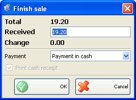

Finalizare vanzare
Folositi fereastra Finalizate vanzare pentru a salva vanzarea si a selecta metoda de plata. Plata poate fi facuta in: numerar, prin terminal POS bancar, prin cont bancar (CEC).
Aplicatia va calcula automat restul pe care trebuie sa-l primeasca clientul.
Bifati optiunea Print cash receipt si trimiteti informatiile la o imprimanta fiscala pentru tiparirea bonului fiscal!

Click pe butonul OK pentru confirmare plata. Click Cancel pentru iesire fara salvarea operatiei.
�2006-2012 Microinvest, All rights reserved